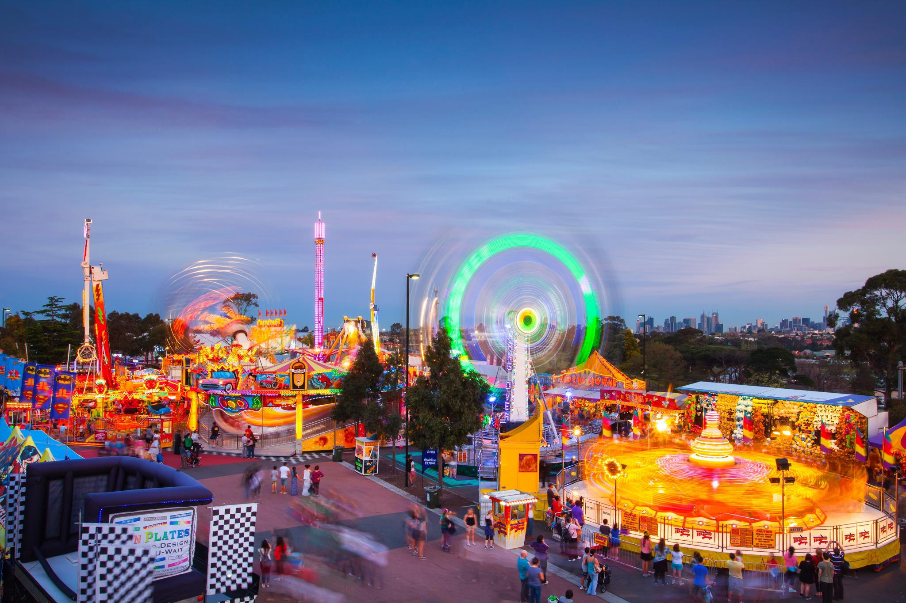
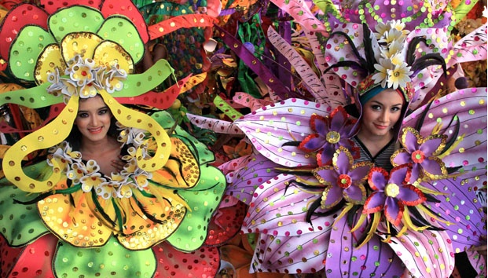

Events
Royal Melbourne Show
(@melbourne show ground)23 September - 3 October 2017
address: Epsom Rd, Ascot Vale VIC 3032
https://royalshow.com.au/

How to get there (from CBD):
by car —> limited onsite parking
by tram —> Route 57 tram (West Maribyrnong to Elizabeth Street, City), stops at stop 32 (Showgrounds Village Shopping Centre on Epsom Road)
by bus —> Bus No. 472 (Williamstown to Moonee Ponds) stops along Langs Road.
Bus No. 404 (Footscray to Moonee Ponds) stops on the corner of Epsom and Ascot Vale Roads.
by train —> Melbourne Showgrounds has its own train station that operates for selected events only.
What is it about:
Agricurtular show held at melbourne show ground
Moomba Festival
10 March - 13 March 2017address: Yarra River, Birrarung Marr
http://www.onlymelbourne.com.au/moomba-festival#.WJrhlJI35LU

How to get there (from CBD):
by walking (it’s alongside yarra river, near federation square)
What is it about:
Australia's largest free community festival and one of Australia's longest-running community festivals
Wonderful Indonesia

Celebrate our Indonesian culture in Melbourne through Wonderful Indonesia Festival. Presenting free and interesting events activities for us to enjoy with family and friends, the festival aims to celebrate Melbourne’s multiculturalism while strengthening the relationship between Indonesians and Australians through Indonesia’s colourful delicacies, music and culture. Traditional Indonesian music and dance will be exhibited with several Indonesian food stalls for you guys who miss Indonesian foods. This festival is annually held by Consulate-General of the Republic of Indonesia.